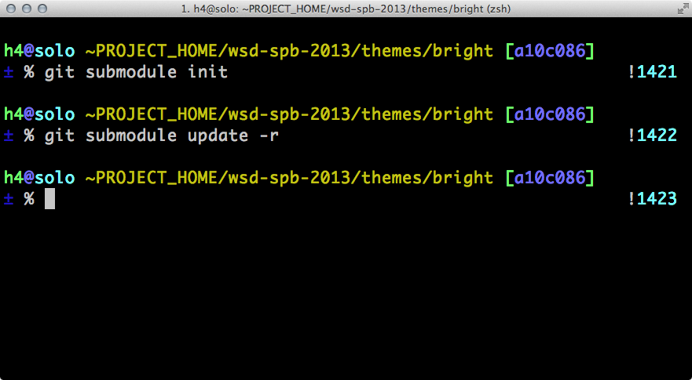

$ sudo npm update npm
pmList == [ 'npm', 'volo', 'bower', 'component' ]
pmList.filter(hasGui) == [ ]
function hasGui(elem) {
return elem.gui === true;
}
No. This will never happen. This question comes up sometimes, because it seems silly from the outside that npm couldn't just be configured to put stuff somewhere else, and then npm could load them from there. It's an arbitrary spelling choice, right? What's the big deal?
{"name": "{{project}}","version": "1.0.0","description": "{{description}}","repository": "git://github.com/{{author}}/{{project}}.git","dependencies": {"hyperquest": "~0.1.0"},"devDependencies": {"mocha": "*"},}
"dependencies" : {
"foo" : "1.0.0 - 2.9999.9999",
"bar" : ">=1.0.2 <2.1.2",
"baz" : ">1.0.2 <=2.3.4",
"boo" : "2.0.1",
"qux" : "<1.0.0 || >=2.3.1 <2.4.5 || >=2.5.2 <3.0.0",
"asd" : "http://asdf.com/asdf.tar.gz",
"til" : "~1.2",
"elf" : "~1.2.3",
"two" : "2.x",
"thr" : "3.3.x"
}
$ npm install -g volo
... // package.json
{
"volo": {
"baseUrl": "",
"url": "",
"dependencies": {},
"ignore": []
}
}
$ npm install -g bower
./.bowerrc
{
"name": "my-project",
"version": "1.0.0",
"ignore": [],
"dependencies": {
"<name>": "<version>",
"<name>": "<folder>",
"<name>": "<package>"
},
"devDependencies": {}
}
| backbone + jquery | явно — устаревший underscore | удаление underscore | |
|---|---|---|---|
| node | jQ - fail | ok | +- |
| volo | ok, jQuery 2.0.2 | warn | - |
| bower | -, components/backbone | warn | Ok |